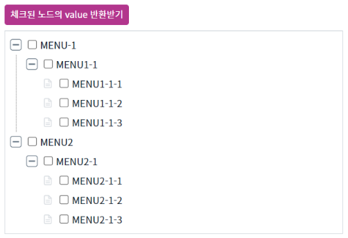
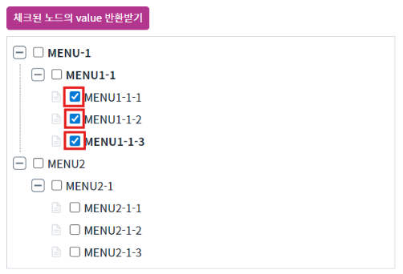
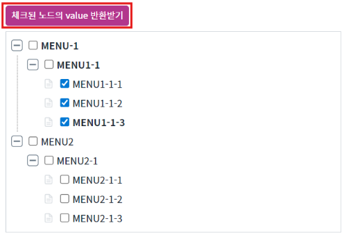
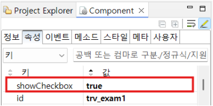

Treeview의 'showCheckbox' 속성과 'getCheckedValues' 메소드를 사용하여 체크된 노드들의 Value를 배열로 반환받는 예제입니다.
Treeview에 체크박스 추가하기
체크된 노드의 value를 배열로 반환받기
1
STEP 1: 초기 상태를 확인합니다.
Image 1.브라우저(Chrome) 실행 예시

2
STEP 2: value를 반환받을 노드를 체크합니다.
Image 2.브라우저(Chrome) 실행 예시

3
STEP 3: '체크된 노드의 Value 반환받기' 버튼을 클릭합니다.
Image 3.브라우저(Chrome) 실행 예시

4
STEP 4: 로그를 확인합니다.
Example 1.Log
[10:10:21] checkedValues : [menu1-1-1,menu1-1-2,menu1-1-3]
1
Treeview의 속성을 정의합니다.
[필수] showCheckbox="true"
(옵션 설명)
노드에 checkbox의 표시 여부.
Image 4.웹스퀘어 스튜디오의 Component View 예시

'getCheckedValues' 메소드를 사용하여 체크된 노드들의 value 값을 반환 받습니다.
Example 2.Script
// 예제 파일에서는 스크립트 scwin.btn_exam1_1_onclick에 작성되어 있습니다. var tmp = trv_exam1.getCheckedValues();
showCheckbox
getCheckedValues